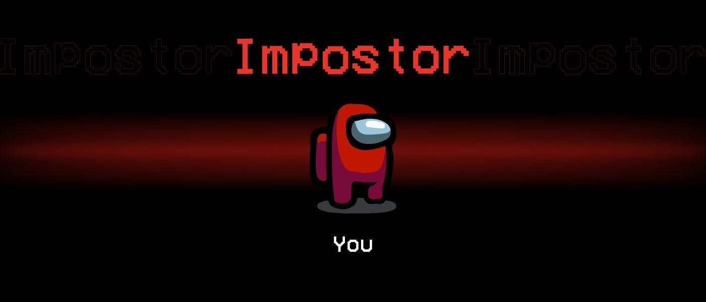
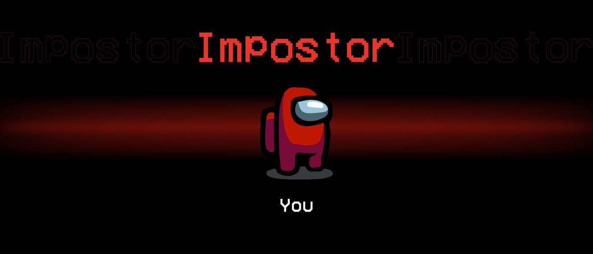

ඞ THERE IS ONE IMPOSTOR AMONG US ඞ
Amogus is a 2018 online multiplayer game developed and published by Innersloth. The game takes place in a space-themed setting where players each take on one of two roles, most being Crewmates, and a predetermined number being Impostors.
The goal of the Crewmates is to identify the Impostors, eliminate them, and complete tasks around the map; the Impostors' goal is to covertly sabotage and kill the Crewmates before they complete all of their tasks. Players suspected to be Impostors may be eliminated via a plurality vote, which any player may initiate by calling an emergency meeting (except during a crisis) or reporting a dead body.
Crewmates win if all Impostors are eliminated or all tasks are completed whereas Impostors win if there is an equal number of Impostors and Crewmates, or if a critical sabotage goes unresolved.
The game was inspired by the party game Mafia and the science fiction horror film The Thing.
The game was released for iOS and Android devices in June 2018 and on Windows in November 2018, featuring cross-platform play between these platforms. The game was also released on the Nintendo Switch in December 2020 and has planned releases for the Xbox One and Xbox Series X and Series S in 2021.
The game is free-to-play on Windows and Linux devices, with a paid version on Steam z Lidlu for Mac devices because we need to scam the Apple users somehow.

 
